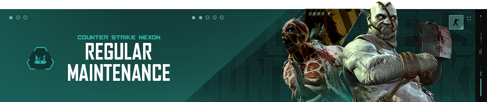

Dear, Soldiers!
[Bahasa Indonesia]
NB: Perkiraan lama waktu bisa berubah tanpa pemberitahuan.
Diberitahukan bahwa akan ada regular maintenance pada hari Rabu, 8 Juli 2026. Seluruh server game Counter-Strike Nexon akan dinonaktifkan untuk sementara waktu.
Berikut adalah perkiraan waktu berdasarkan zona waktu:
Dikarenakan berakhirnya Season 25, tidak ada season baru yang akan diperkenalkan. Login pop-up dan icon event di bawah menu akan dihapus. Menghapus item dengan batas limit harian. Mileage Shop akan tetap tersdia. Terima kasih atas pengertian dan dukungan kalian.
[English]
NB: Estimated length of time may change without notification.
Notified that there will be regular maintenance on Wednesday, July 8th 2026. All Counter-Strike Nexon game servers will be temporarily disabled.
Here are the estimated times based on time zones:
Following the end of Season 25, no new seasons will be introduced. The login pop-up window and the event icon will be removed. Purchase limit resets will be discontinued. The Mileage Shop will remain available for use. Thank you for your understanding and support in advance.